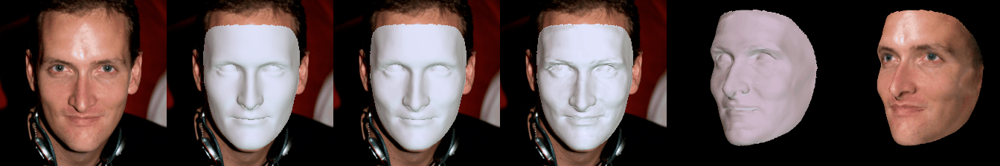
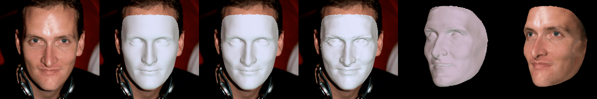

A Hierarchical Representation Network for Accurate and Detailed Face Reconstruction from In-The-Wild Images
Abstract
Limited by the nature of the low-dimensional representational capacity of 3DMM, most of the 3DMM-based face reconstruction (FR) methods fail to recover high-frequency facial details, such as wrinkles, dimples, etc. Some attempt to solve the problem by introducing detail maps or non-linear operations, however, the results are still not vivid. To this end, we in this paper present a novel hierarchical representation network (HRN) to achieve accurate and detailed face reconstruction from a single image. Specifically, we implement the geometry disentanglement and introduce the hierarchical representation to fulfill detailed face modeling. Meanwhile, 3D priors of facial details are incorporated to enhance the accuracy and authenticity of the reconstruction results. We also propose a de-retouching module to achieve better decoupling of the geometry and appearance. It is noteworthy that our framework can be extended to a multi-view fashion by considering detail consistency of different views. Extensive experiments on two single-view and two multi-view FR benchmarks demonstrate that our method outperforms the existing methods in both reconstruction accuracy and visual effects. Finally, we introduce a high-quality 3D face dataset FaceHD-100 to boost the research of high-fidelity face reconstruction.
Core idea
Fig.1 An illustration of the geometry disentanglement and the hierarchical representation.
Networks
Fig.2 An overview of the proposed framework.
Results


 

Citation
@inproceedings{Lei2023AHR, title={A Hierarchical Representation Network for Accurate and Detailed Face Reconstruction from In-The-Wild Images}, author={Biwen Lei and Jianqiang Ren and Mengyang Feng and Miaomiao Cui and Xuansong Xie}, year={2023} }